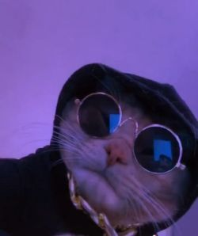

Conocido también como el amigo de todos, León Rodríguez es uno de los personajes más interesantes de todos los tiempos. Durante su vida ha tenido muchos momentos claves, sin embargo los más importantes son el haber sido adoptado casi al momento de nacer, el desarrollo de un gran interés por las tecnologías y la obtención de merecidos reconocimientos por organizaciones a nivel mundial.
León Rodríguez empezó su carrera a la temprana edad de 2 años.
Sus primeros proyectos fueron la creación de videojuegos en la plataforma Atari.
Actualmente se encuentra estudiando nuevas tecnologías y certificando lo aprendido.
León Rodríguez ha recibido a lo largo de su vida varias distinciones en el mundo de las ciencias y tecnologías, las más destacadas son el primer lugar categoría videojuego independiente por Atari y primer lugar en talento digital por Purina Cat Chow. No obstante otros premios y reconocimientos han sido: